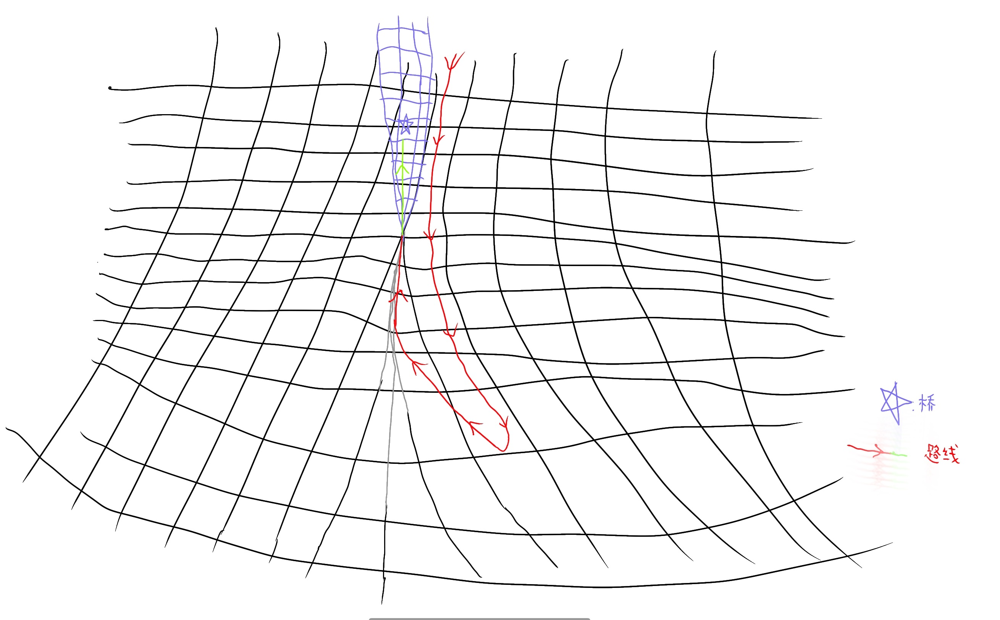

......
“后面？？？”
“还后面，这导航瞎说什么呢？”
有人用手指戳了戳我的后背，她是星茸。
回首，身后竟然真的有一桌木桥。
“这桥什么时候出现的？”
“导航都能导到，桥当然一直都在这里咯。” 云露一边看着导航一边说。
我凑过去，观察地图。地图上的网格线并不想据点那边一样呈方格状，而是扭曲的。
有几条方格线被“折进了空间里”......这真的很难描述。

“别管了，赶紧走吧，集群里这样神奇的事可不少见。”
桥的对面就是“湖泊”了。空中飘着一层薄薄的水雾，数不清的水洼，湖泊镶嵌与坑洼的地面。
一些地势较高的湖泊周围的土地甚至呈现出了火山口的形态。
走到桥上向左右看去只能看到一片漆黑，就像是一片虚空。
不知是不是错觉，“虚空”的深处散发着若有若无紫色荧光。
回头看向其他人，星茸依旧在本子上写着些什么，云露瞪着眼望向前方，兰晓和琳玉聊得投入。
或许只是我的错觉？
进入“湖泊”，气温似乎瞬间低了一度。
相比开发区，这里安静的有点可怕。整个世界只剩下了我们的声音。
这种静谧的气氛让我有些不自在。
向远处望去，除了凹凸不平的地面和湖泊再无他物。湖泊倒映着积满云层的白色天空，陆地就像飘在空中的树枝一样，蜿蜒曲折。
这里的地面上布满了野草，但鲜少有灌木，乔木更是没有。
湖水清澈，可以清楚地看见水草的扭曲。
突然，远处的水面激起一道道波纹，一阵清风吹来。
我把外套的拉链向上拉了拉。
我的头仍在微微地作痛。
......
走了许久，我感到无聊。
“喂，我们接下来去哪？”
云露好像愣了两秒，然后跑道星茸耳边说起来悄悄话。
“额，下一站是高架桥。”
“什么高架桥？”
“一个全是高架桥的空间。”
“哦，还有多久才到。”
“不知道。”
“啥？”
“不知道。”
“你带路你咋不知道？”
“带路？哦，我也不知道往哪走。”
“啥？”
“我也不知道往哪走。”
“不是问你说了啥，你不知道往哪走你带啥路啊。”
“嗯......我和星茸当时在湖泊走一半就被就回据点了，所以完整路线我不知道。
现在除了随便走走，看看能不能到当时走过了路就没办法了。毕竟这里可没导航。”
“唉，行吧行吧。”
......
“是不是该歇会了。” 我说。
“歇会吧，我也有点累了。” 兰晓说。
“先休息会吧。” 云露说。
琳玉把包放下，发出丁玲咣啷的声音。
早上被吵醒然后头痛一整天的痛苦记忆开始攻击我。
“你包里都放了些什么？”
“嗨，你不说我都差点忘了。”
琳玉拉开包的拉链，然后从里面倒出了1个铁锅、1个塑料袋、2枚硬币、3根笔芯、5个对讲机、27个电池，一条充电线。
“之前在仓库顺了点东西。”
“这些都是你在仓库顺的？”
“只有对讲机和电池是顺的。” 琳玉说着，递给了我一个对讲机。
我接过对讲机，吐出一句 “你下次动静小一点。”
......
不知过去了多久，终于到了那个满是高架桥的地方。
人们都说之所以会有白天和黑夜是因为太阳会在白天升起，
但这里的白天没有太阳。
之前我只看在手机上看过高架桥，毕竟据点没有也不需要这种东西。
而现在，我就站在一座高架桥上面，远处还排列着数不清的个高架桥。
或许集群就是这样的，把某个东西复制数遍就可以构成一个空间了。
如此无趣的画面却让我感到了有些震撼。
数百米长的道路铺在桥上，桥的中央，两边升起百米高的或许是装饰用的柱子，然后垂下数条钢索接在路的两旁。
桥下是一望无尽的湖泊，又或者说是海？延伸到天边与蔚蓝的天空相接。
我第一次感到自己是如此的渺小。
自被绑架以来紧绷的神经终于在海浪声中有些放松。
......